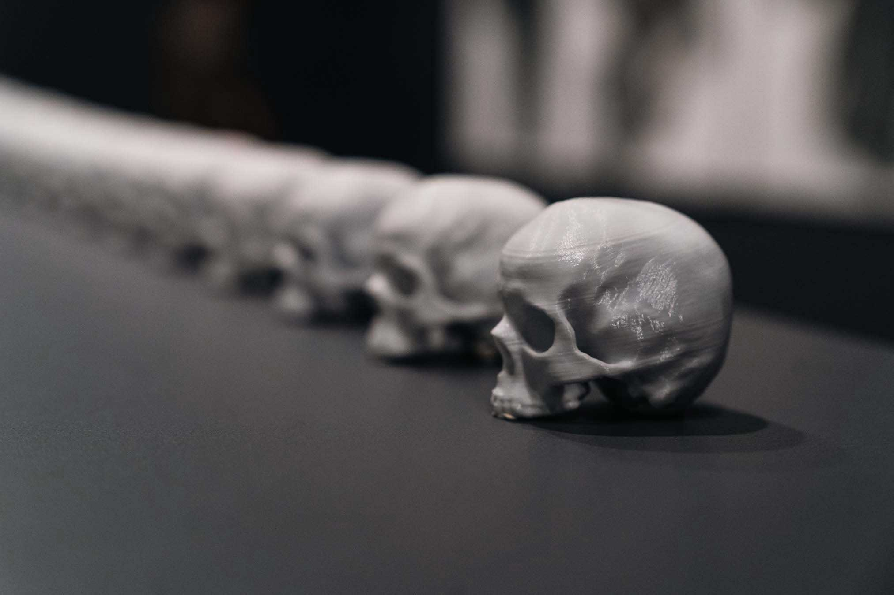
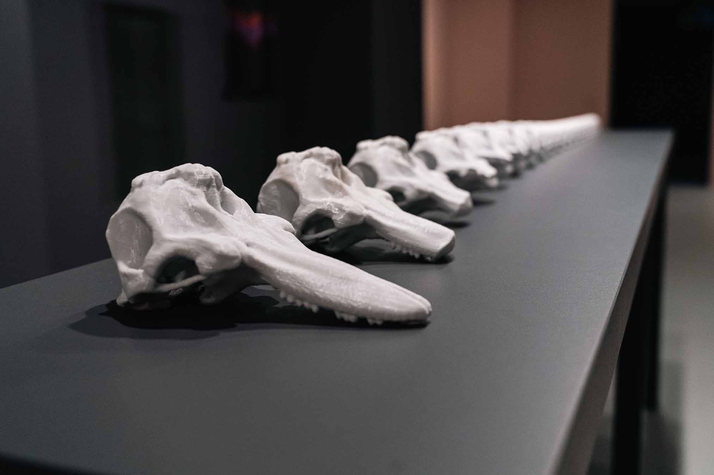
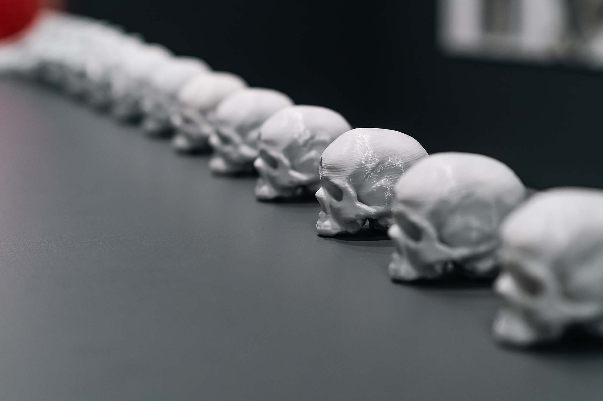
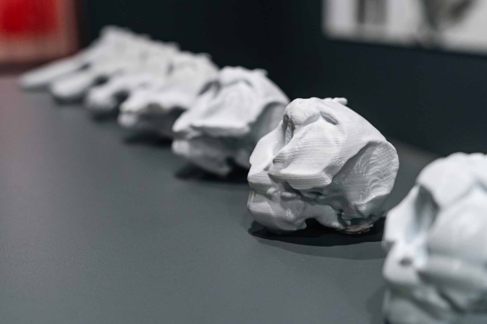
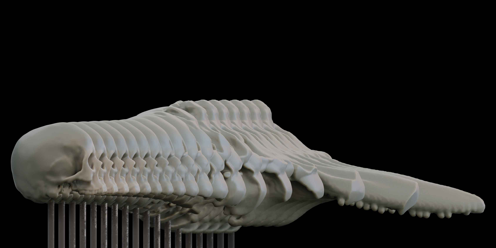
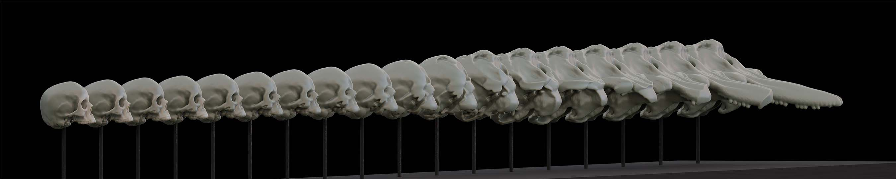
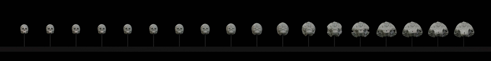
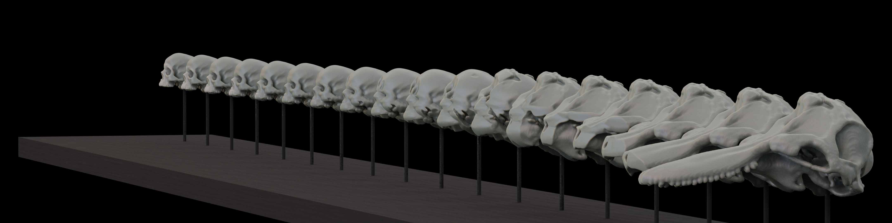

Bridging the Gap, 2022









Dedicated to the painting of the same name by Sergei Pankejeff, recorded as "The Werewolf Case," who received psychoanalysis treatment after suffering from wolves in his nightmares. The face of Sergei Pankejeff, reproduced by various artificial intelligence models from a digital photograph of his dead mask.